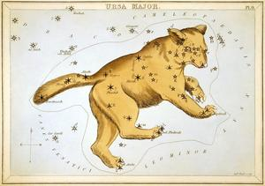
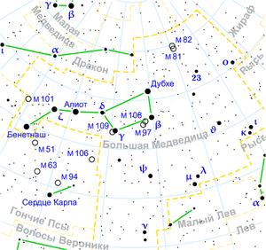

ИсторияДревнее созвездие. Вероятно, первоначально ассоциировалось только с ярким астеризмом Большой Ковш. У древних греков использовались наименования Гелика («раковина»), Арктос («медведь», «медведица»), Колесница. Исследователи считают древнейшим и восходящим к ещё охотничьим временам название Арктос. По свидетельству греческих авторов (например, Арата Солийского, «Явления и предсказания», III век до н. э.), созвездие использовалось древними греками для навигации. Греческий миф повествует, что Зевс превратил прекрасную нимфу Каллисто в Медведицу, чтобы спасти её от мести Геры. Другой миф, рассказанный Филемоном из Сиракуз, напоминает о двух критских нимфах, которых младенец-Зевс также превратил в медведиц, пряча от Кроноса, а затем перенёс на небо в виде Большой и Малой Медведиц. Включено в каталог звёздного неба Клавдия Птолемея «Альмагест». По-санскритски созвездие называется «Сапта Риши», что означает «Семь Риши (Мудрецов)». У кочевников казахов созвездие называется «Жетіқарақшы» и переводится как «Семь разбойников». По легенде, Тенгри привязал к Железному колышку — Темірқазық (Полярной звезде), своих коней Акбоз и Кокбоз (видимые рядом с ней звёзды), а семь разбойников хотят украсть этих лошадей и кружатся вокруг них. Кочевники издревле использовали Полярную звезду (Темірқазық) для ориентирования и уделяли немало внимания наблюдению за звёздным небом. В китайской астрономии семь звёзд ковша носят название Северный Ковш (Бэйдоу). В древние времена ручка ковша указывала почти на полюс и использовалась китайцами для отсчёта времени. У башкир созвездие называется «Етегән», в честь семи девушек башкирской легенды «Ете ҡыҙ» или в переводе на русский «Семь девушек». У эвенков созвездие отождествляется с образом космического лося Хэглэна, в русской народной традиции созвездие также иногда называется «Лосем». Советский археолог и историк, академик РАН Б. А. Рыбаков в известной своей работе писал: «Важнейшее созвездие нашего северного полушария — Большая Медведица — на русском Севере называлось „Лосем“, „Сохатым“… У поляков Полярная звезда называется „Лосиной звездой“ (Gwiazda Łosiowa). У эвенков созвездие Большой Медведицы (Ursus Major) называется „Лосихой Хэглен“». Также в Древней Руси это созвездие называлось «Конь на Приколе». О созвездииБольша́я Медве́дица (лат. Ursa Major) — созвездие северного полушария неба. Семь звёзд Большой Медведицы составляют фигуру, напоминающую ковш с ручкой. Две самые яркие звезды — Алиот и Дубхе — имеют блеск 1,8 видимой звёздной величины. По двум крайним звёздам этой фигуры (α и β) можно найти Полярную звезду. Трёхбуквенное обозначение созвездия «UMa» было принято Международным астрономическим союзом (МАС) в 1922 году. Большая Медведица граничит с восемью другими созвездиями: Дракон на севере и северо-востоке, Волопас на востоке, Гончие Псы на востоке и юго-востоке, Волосы Вероники на юго-востоке, Лев и Малый Лев на юге, Рысь на юго-западе и Жираф на северо-западе. Большая Медведица покрывает 1279,66 квадратных градусов или 3,10 % всего неба, что делает его третьим по величине созвездием. В 1930 году Эжен Дельпорт установил официальные границы созвездия МАС, определив его как 28-сторонний неправильный многоугольник. НаблюдениеНаилучшие условия видимости — в марте—апреле. Созвездие видно на всей территории России круглый год (за исключением осенних месяцев на юге России, когда Большая Медведица спускается низко к горизонту). В верхней кульминации, которая происходит весной в полночь, созвездие в средней полосе России находится в области зенита. |
 |
|  | |